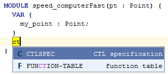

Code completion &shortcut:CodeCompletion; is your good friend allowing you to quickly complete the models you started to type. You need not remember the exact syntax, the code completion will guide you to build meaningful models.
